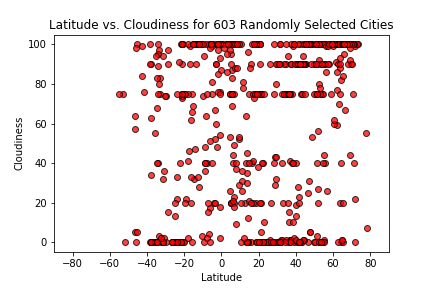

Cloudiness
This chart above displays the percentage of cloudiness by latitude for 500+ randomly selected cities. The apparent lines along certain cloudiness values probably reflect a somewhat subjective method of determining percentage cloudiness (e.g. "partly cloudy" being assigned to a percentage value) and the bins used to describe it (e.g. 10%, 20%).